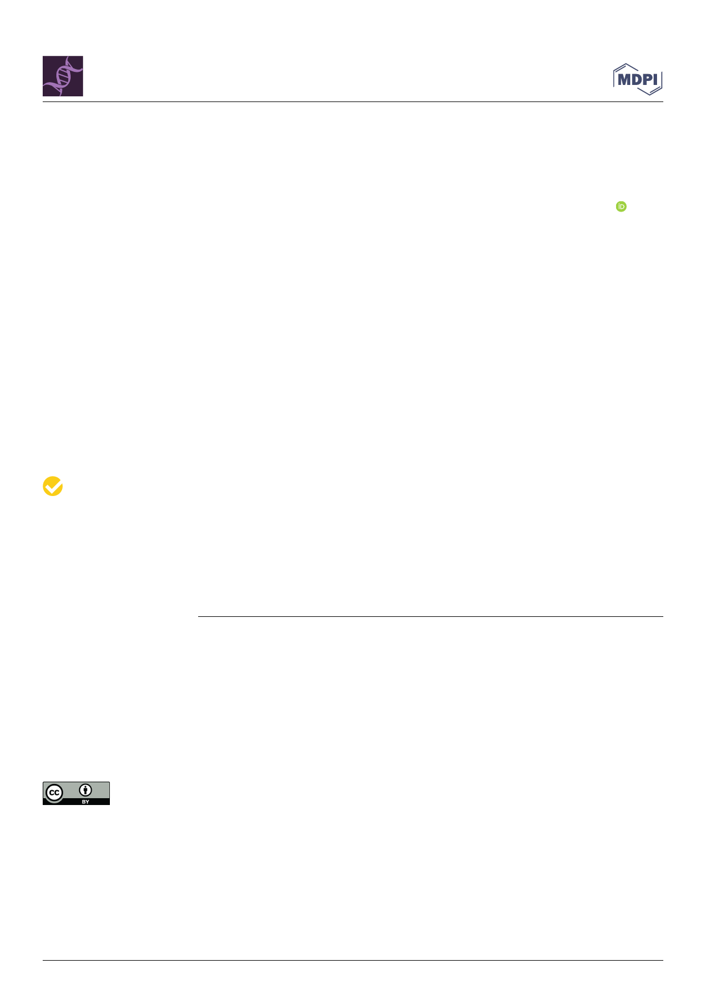

International Journal of
Molecular Sciences
Review
Label-Free Multiphoton Microscopy: Much More than
Fancy Images
Giulia Borile 1,2,*,†, Deborah Sandrin 2,3,†, Andrea Filippi 2, Kurt I. Anderson 4 and Filippo Romanato 1,2,3
1 Laboratory of Optics and Bioimaging, Institute of Pediatric Research Città della Speranza, 35127 Padua, Italy;
filippo.romanato@unipd.it
2 Department of Physics and Astronomy “G. Galilei”, University of Padua, 35131 Padua, Italy;
deborah.sandrin@unipd.it (D.S.); andrea.filippi.5@studenti.unipd.it (A.F.)
3 L.I.F.E.L.A.B. Program, Consorzio per la Ricerca Sanitaria (CORIS), Veneto Region, 35128 Padua, Italy
4 Crick Advanced Light Microscopy Facility (CALM), The Francis Crick Institute, London NW1 1AT, UK;
kurt.anderson@crick.ac.uk
* Correspondence: giulia.borile@unipd.it
† These authors contributed equally.
Citation: Borile, G.; Sandrin, D.;
Filippi, A.; Anderson, K.I.; Romanato,
F. Label-Free Multiphoton
Microscopy: Much More than Fancy
Images. Int. J. Mol. Sci. 2021, 22, 2657.
https://doi.org/10.3390/
ijms22052657
Abstract: Multiphoton microscopy has recently passed the milestone of its first 30 years of activity in
biomedical research. The growing interest around this approach has led to a variety of applications
from basic research to clinical practice. Moreover, this technique offers the advantage of label-free
multiphoton imaging to analyze samples without staining processes and the need for a dedicated
system. Here, we review the state of the art of label-free techniques; then, we focus on two-photon
autofluorescence as well as second and third harmonic generation, describing physical and technical
characteristics. We summarize some successful applications to a plethora of biomedical research fields
and samples, underlying the versatility of this technique. A paragraph is dedicated to an overview of
sample preparation, which is a crucial step in every microscopy experiment. Afterwards, we provide
a detailed review analysis of the main quantitative methods to extract important information and
parameters from acquired images using second harmonic generation. Lastly, we discuss advantages,
limitations, and future perspectives in label-free multiphoton microscopy.
Keywords: multiphoton microscopy; label-free; second harmonic generation; third harmonic genera-
tion; quantitative imaging
Academic Editor: Andrew Clayton
Received: 2 February 2021
Accepted: 2 March 2021
Published: 6 March 2021
Publisher’s Note: MDPI stays neutral
with regard to jurisdictional claims in
published maps and institutional affil-
iations.
Copyright: © 2021 by the authors.
Licensee MDPI, Basel, Switzerland.
This article is an open access article
distributed under the terms and
conditions of the Creative Commons
Attribution (CC BY) license (https://
creativecommons.org/licenses/by/
4.0/).
1. Introduction
Light microscopy is a gold standard technique in biomedical research and clinical
diagnosis [1]. The huge technical developments toward more and more sophisticated
apparatus [2–4] enhanced the broad use of light microscopy, which in turn increased the
need for innovative microscopy approaches. Some examples of these multidisciplinary
solutions are nonlinear optical microscopy, super-resolution [5–7], fluorescent markers,
and optimization of sample preparation [8,9]. Confocal laser scanning microscopy is
routinely used in biomedical research because it ensures high resolution and high contrast
compared to epifluorescence microscopes (for a complete review, see Jonkman et al. [10]).
A drawback of this technique is the limited penetration into the sample (50–100 µm)
and the photodamage caused by illumination light, which is usually in the range of 400–
600 nm. Thanks to the use of longer wavelengths (800–1200 nm), multiphoton microscopy
reduces sample damage and provides deeper penetration (250–500 µm) into the specimen,
although with some loss of resolution. This technique has found success as a non-invasive
imaging tool for thick biological tissues and living animals. There are typically two
labeling strategies for multiphoton experiments. Fluorescent proteins may be expressed
under genetic control throughout a tissue sample; however, this requires complex and
time-consuming genetic manipulation of the model organism genome. Alternatively,
Int. J. Mol. Sci. 2021, 22, 2657. https://doi.org/10.3390/ijms22052657
https://www.mdpi.com/journal/ijms